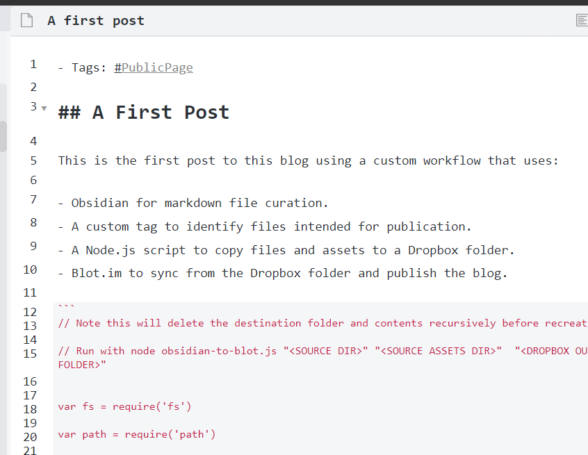

A Custom Workflow to Publish from Obsidian to Blot.im
This is the first post to this blog using a custom workflow that uses:
- Obsidian for markdown file curation.
- A custom tag to identify files intended for publication.
- A Node.js script to copy files and assets to a Dropbox folder.
- Blot.im to sync from the Dropbox folder and publish the blog.
How the post appears in Obsidian

The Node.js script for identifying and copying out files for publication
// Note this will delete the destination folder and contents recursively before recreating.
// Run with node obsidian-to-blot.js "<SOURCE DIR>" "<SOURCE ASSETS DIR>" "<DROPBOX OUTPUT FOLDER>"
var fs = require('fs')
var path = require('path')
const argsArray = process.argv.slice(2)
if (argsArray.length === 3) {
const pagesFolder = argsArray[0]
const assetsFolder = argsArray[1]
const destinationFolder = argsArray[2]
console.log('pagesFolder: ' + pagesFolder)
console.log('assetsFolder: ' + assetsFolder)
console.log('destinationFolder: ' + destinationFolder)
console.log('Deleting destination folder: ' + destinationFolder)
fs.rmdirSync(destinationFolder, { recursive: true })
console.log('Creating destination folder: ' + destinationFolder)
if (!fs.existsSync(destinationFolder)) {
fs.mkdirSync(destinationFolder)
}
// Create destination assets folder if it doesn't exist
const destinationAssetsFolder = destinationFolder + '/assets'
if (!fs.existsSync(destinationAssetsFolder)) {
fs.mkdirSync(destinationAssetsFolder)
}
fs.readdir(pagesFolder, function (err, list) {
if (err) {
throw err
}
list.forEach(function (textFilePath, i) {
textFilePath = path.resolve(pagesFolder, textFilePath)
let textFileName = path.basename(textFilePath)
let textFileText = fs.readFileSync(textFilePath, 'utf8')
const textFileLines = textFileText.split(/\r?\n/)
let isPublic = false
for (let i = 0; i < textFileLines.length; i++) {
// Only search first few lines of text for public tag
if (i > 10) {
break
}
let lineText = textFileLines[i]
if (lineText) {
lineText = lineText.trim()
// Check line is not empty
if (lineText.length > 0) {
// Check line is not comment
if (lineText.indexOf('#_PublicPage') != -1) {
isPublic = true
}
}
}
}
if (isPublic) {
console.log('Found public page: ' + textFileName)
}
if (isPublic) {
// Parse asset links from file
var originalLinkRegex = /!\[(.*)]\(\.\.\/assets\/(.+)\)/g
while ((result = originalLinkRegex.exec(textFileText))) {
// Extract components from link names
const linkFull = result[0]
const linkText = result[1]
const linkFileName = result[2]
console.log('Captured asset linkFull: ' + linkFull)
console.log('Captured asset linkText: ' + linkText)
console.log('Captured asset linkFileName: ' + linkFileName)
// Obsidian will URL encode the file URL so decode this as not compatible with blot
const linkFileNameUrlDecoded = decodeURIComponent(linkFileName)
console.log('linkFileNameUrlDecoded: ' + linkFileNameUrlDecoded)
// If the asset referenced by the link, copy it out to the blot folder.
// The file name must start with an underscore so that it does not appear as a blog entry
// in it's own right
if (
fs.existsSync(
path.resolve(assetsFolder + '/' + linkFileNameUrlDecoded),
)
) {
console.log('Copying asset: ' + linkFileNameUrlDecoded)
fs.copyFileSync(
path.resolve(assetsFolder + '/' + linkFileNameUrlDecoded),
path.resolve(
destinationFolder + '/assets/_' + linkFileNameUrlDecoded,
),
)
}
}
// Replace the links with a format and path compatible with blot.
// Again, the link to the asset must begin with an underscore.
let modifiedFileText = textFileText.replace(
originalLinkRegex,
'',
)
// Write out the file to the destination folder
console.log('Copying text file: ' + textFileName)
fs.writeFileSync(
path.resolve(destinationFolder + '/' + textFileName),
modifiedFileText,
)
}
})
})
}
Note: In the above delete '_' in the string '#_PublicPage'. As this blog page is dependant on this this tag, it can't exist without modification in the above code snippet.